| 日付 | 2009年7月11日（土） - 2009年7月12日（日） | ||||
|---|---|---|---|---|---|
| 山域 | 越後 | ||||
| メンバー | 友人（男1女1） | ||||
| 山行形態 | 1泊2日無人小屋泊 | ||||
| アクセス | 電車、バス | ||||
| ルート (Map) |
|
巻機山は谷川連峰と越後三山の間にある山で、昔から名峰として知られている。
越後の山にしてはゆったりとした山容で、登山者の人気は高い。
長大な越後山脈の中にありながら、谷川方面にも越後三山方面にも
一般的な登山道は伸びておらず、縦走登山はしにくい山だ。
今回、山頂下にある避難小屋に泊まっての1泊2日で巻機山に登ることにする。
1日目
11:24 沢口バス停到着。標高355m。
梅雨前線は南の方にあると見越して北の方に来たのだが、空はどんよりとしている。
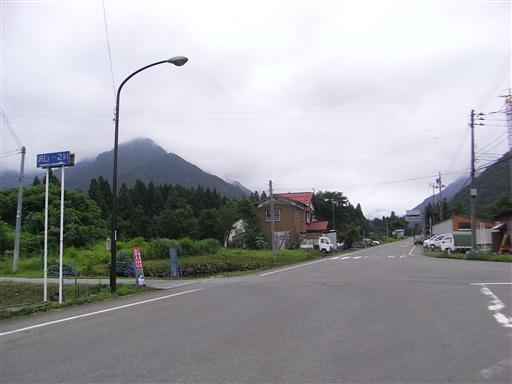
道端にオカトラノオの花が咲いている。
花の形が虎の尾に似ているらしい。
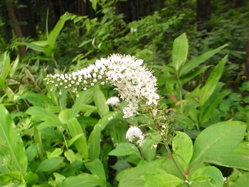
ネジバナ。変わった形の花だ。
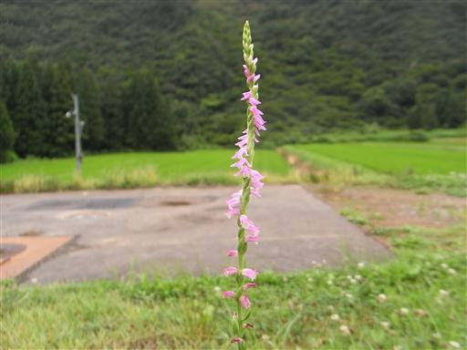
1時間15分ほど車道を歩いて清水集落に到着する。
1日3本はここまでバスが来ているのだが、都合の良い時間には走っていない。
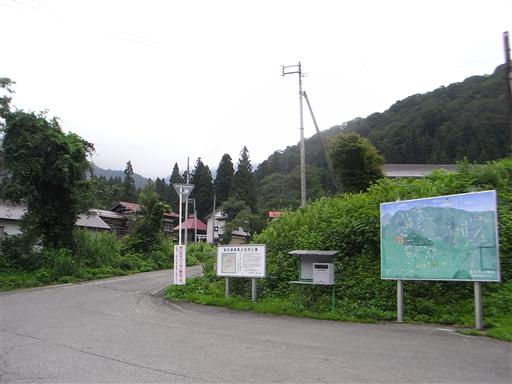
ここからもしばらくは車道歩きが続く。
「巻機山登山口近道」という標識を見つけたので、入っていく。
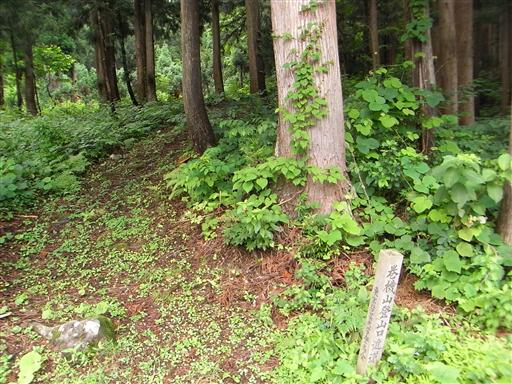
ハナチダケサシの白くて華やかな花が咲いている。
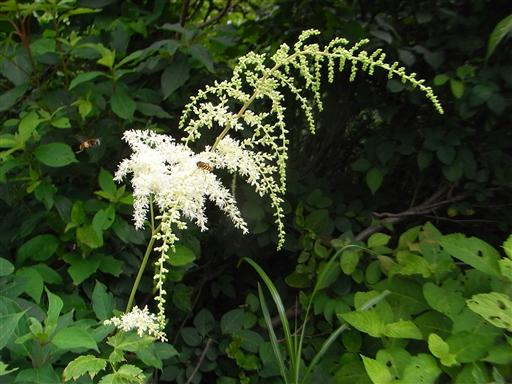
道は藪に覆われ結構酷い状態だ。
そのまま踏み跡を進んでいくと、道はぜんぜん違う方向に向かいだす。
仕方なく引き返すことにする。1時間近くロスしてしまった。
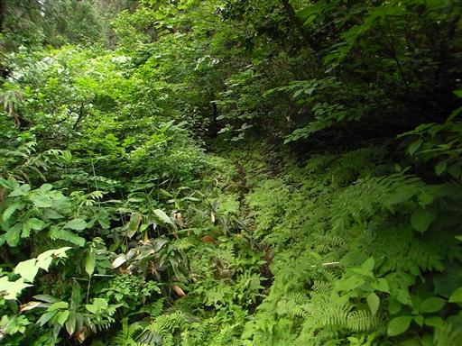
13:47 ようやく駐車場に到着。
足の速い日帰り登山者はもうすでに下山している。
車道歩きの途中も次々と車とすれ違った。
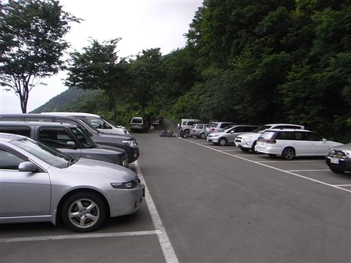
登山道は沢沿いコースと尾根コースがある。
沢沿いコースは楽しそうだが、小屋は尾根コース上にあること、
沢コースは残雪があるかもしれないことから、井戸尾根コースを登る。
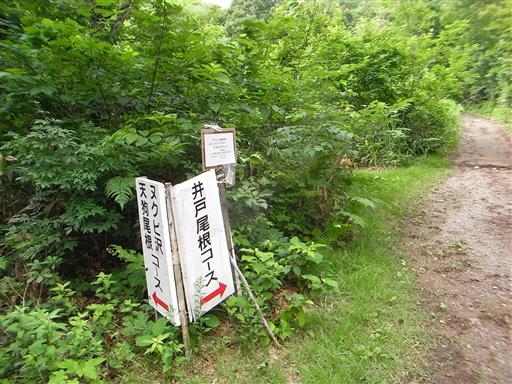
人気の山のメインルートだけあって、道はよく整備されている。
上から下ってくる人のズボンが皆泥だらけなのが気になる。
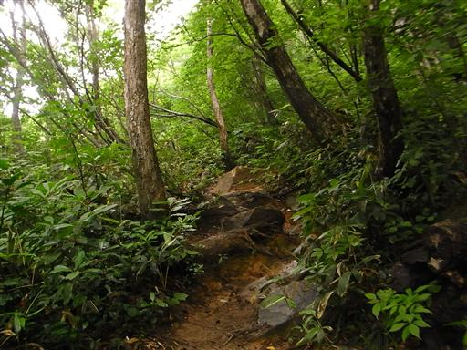
標高を上げていくと、斜面は美しい森に覆われる。
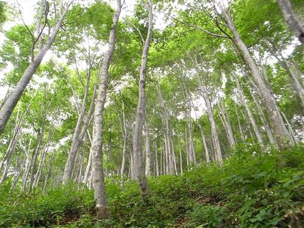
5合目に到着。雲は多いが、少しだけ展望が広がる。
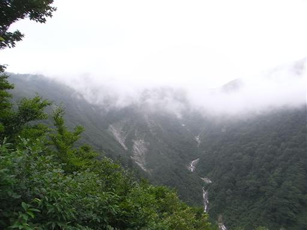
鮮やかなツツジの花。この時期にこれだけきれいな状態で咲いているのは珍しい。
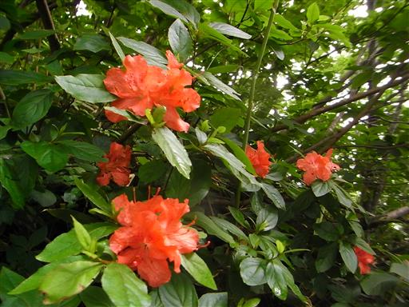
左手に展望が開け、鋭い天狗岩が見える。岩に覆われた格好いいピークだ。
右手に見える三角形は明日登る予定の割引岳。
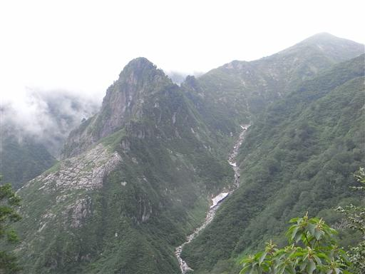
ギンリョウソウがたくさん生えている。
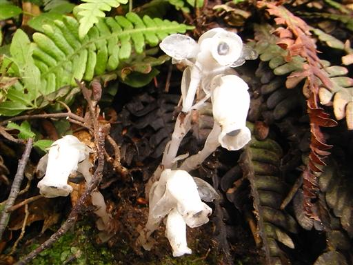
ウラジロヨウラク。この花に出会うのは久しぶり。
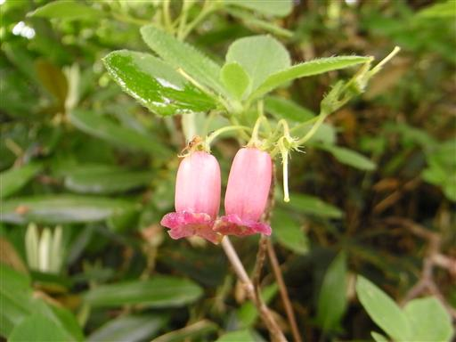
目の前にニセ巻機山が見えてくる。
天気はどんどん良くなってきて、ついに青空まで現れる。
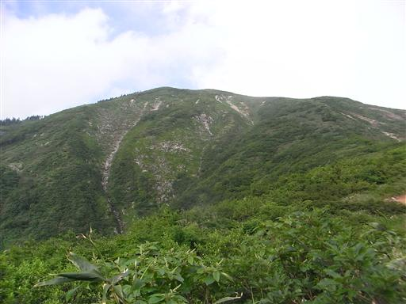
道端に咲くタテヤマリンドウ。
7月は高山植物の最も美しい時期だ。
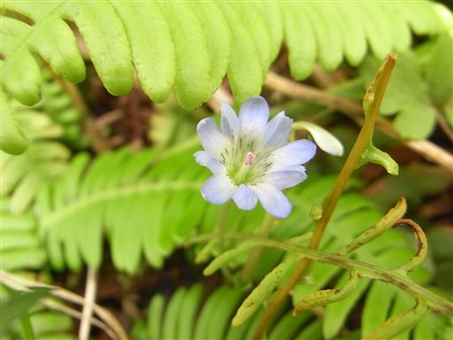
右手には巻機山から、谷川連峰に続く尾根が伸びている。
この尾根もいつか辿ってみたいルートとして候補に挙げている。
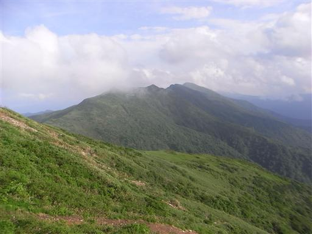
ニッコウキスゲ。やはりこの花には青空がよく似合う。
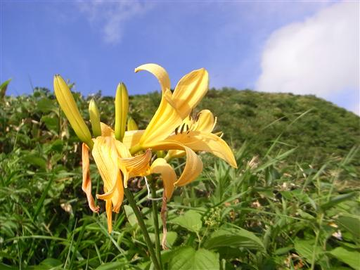
ニセ巻機山への緩い斜面を登っていく。
今日は朝から昼まで曇り。普通、山は朝のほうが天気がよいので、
この時間に晴れてくるのは本当にラッキーだ。

登山道には合目表示の他に、その間には勺の表示までされている。
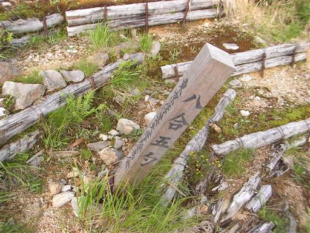
一面に何かの実がなっている。ここだけ見ると秋のような景色だ。
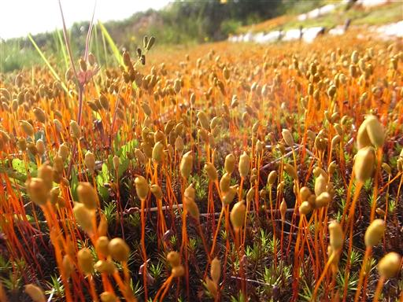
斜面を登っていくと、ついに目の前に巻機山が姿を現す。
緑に覆われ、ゆったりとした山容の本当に美しい山だ。
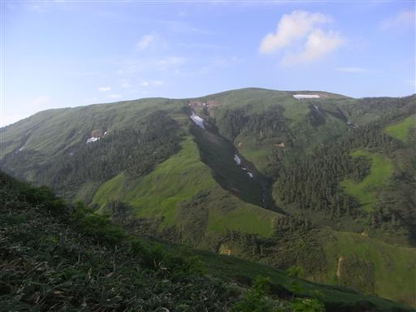
展望も花も天気も最高の尾根道をのんびりと歩く。
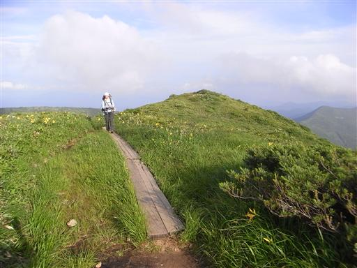
17:12 ニセ巻機山山頂到着。
井戸尾根コースからはずっとこの山が巻機山を隠していたのだが、
ニセというネーミングはいささか酷い。
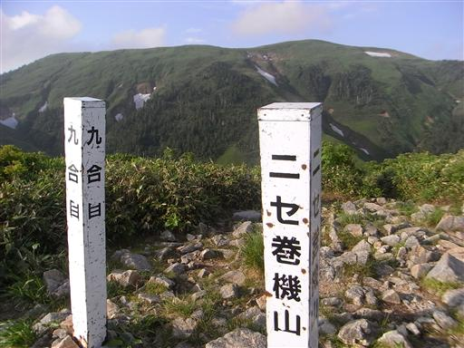
ここから下ったすぐのところに避難小屋がある。
後ろに見えるのは割引岳だ。
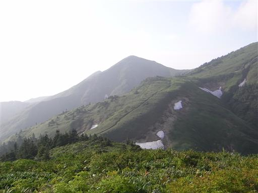
下りの斜面には一面にワタスゲが広がっている。
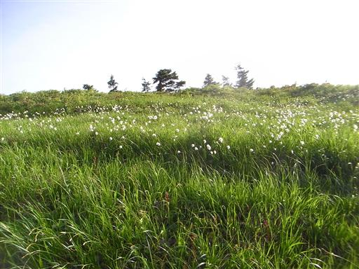
17:39 巻機山避難小屋到着。標高1800m。

この小屋は最近建て替えられたもので、内部は非常にきれい。
2階建てになっていて広さも十分だ。
今夜は我々の他におっさん3人パーティがここに泊まった。
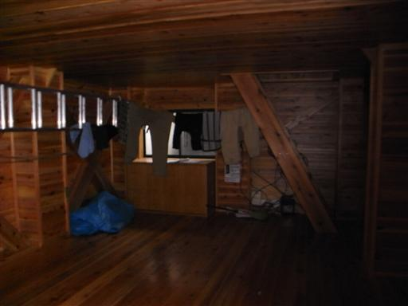
トイレは最新式のバイオトイレ。
用を足した後、自転車のペダルを10回程度漕ぐ。
山のトイレなのに匂いはぜんぜんせず、ここもきれいだ。
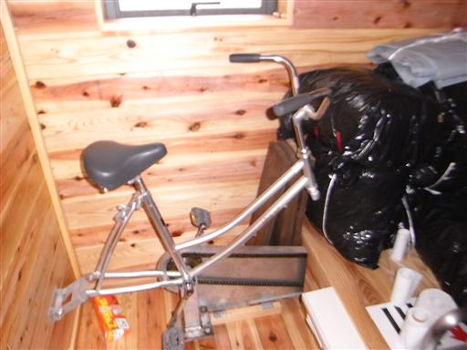
山小屋の側は雪渓が広がっている。その下流で水を汲むことがきる。
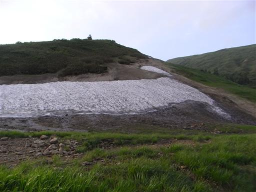
雪渓の側は湿った場所を好む花々で埋め尽くされている。
こちらはイワイチョウ。
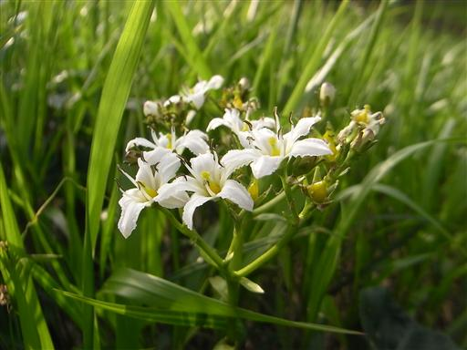
ハクサンコザクラ。大きな群落をつくっている。
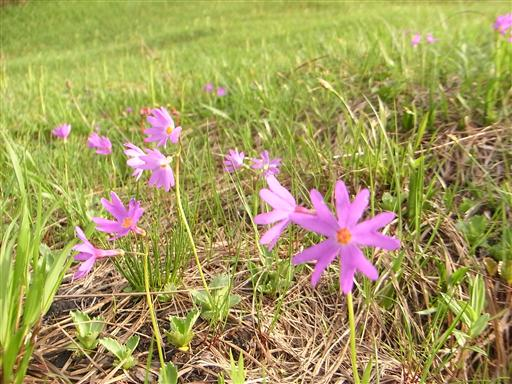
アカモノ。可愛らしい花だ。
秋になると赤い実をつける。
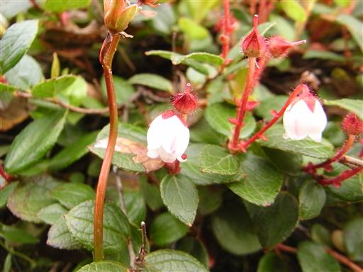
コバイケイソウが夕日を浴びて、赤く染まっている。
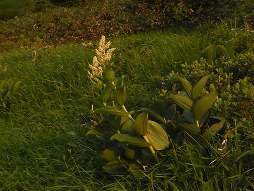
小屋の外で夕食をとっていると、夕日が落ちていった。
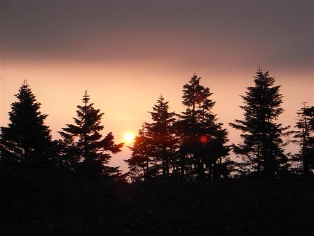